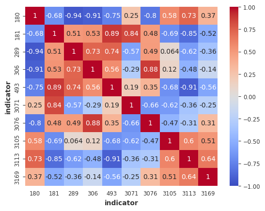
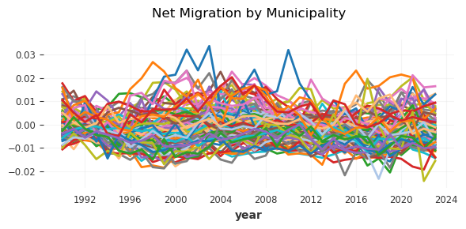

Data preparation for time series models#
Show code cell source
import copy
import pandas as pd
import seaborn as sns
import matplotlib.pyplot as plt
import numpy as np
import shap
import statsmodels.formula.api as smf
import lightgbm as lgb
import re
import optuna
import requests
from darts import TimeSeries
from darts import TimeSeries
from darts.dataprocessing.transformers import Scaler
from darts.models import LinearRegressionModel
from darts.metrics import mae, mape, rmse
from itertools import product
from tsfresh import extract_features
from sklearn.cluster import KMeans
from sklearn.metrics import mean_squared_error, r2_score, mean_absolute_error
from sklearn.model_selection import train_test_split
from scipy import stats
from scipy.stats import f_oneway
from statsmodels.stats.multicomp import pairwise_tukeyhsd
import optuna
from darts.metrics import mape, mae
from pytorch_lightning.callbacks import EarlyStopping
from darts.models import TFTModel
from darts.explainability.tft_explainer import TFTExplainer
/home/kuura/anaconda3/envs/nuwats_env/lib/python3.9/site-packages/statsforecast/utils.py:231: FutureWarning: 'M' is deprecated and will be removed in a future version, please use 'ME' instead.
"ds": pd.date_range(start="1949-01-01", periods=len(AirPassengers), freq="M"),
The StatsForecast module could not be imported. To enable support for the StatsForecastAutoARIMA, StatsForecastAutoETS and Croston models, please consider installing it.
Show code cell source
mun_stats = pd.read_csv("data/statfin_vaerak_pxt_11ra_municipalities.csv", index_col=0)
mun_migri = pd.read_csv("data/statfin_muutl_pxt_11a1_municipalities.csv", index_col=0)
Show code cell source
pop_stats = \
(mun_stats
.loc[mun_stats["Information"] == "Population 31 Dec", :]
.melt(
id_vars=["Area", "Information"],
var_name="year",
value_name="Population 31 Dec")
.drop(columns=["Information"])
.pivot(columns="Area", index="year")
# .astype('int')
.describe())
Show code cell source
muns_of_interest = list(pop_stats.loc[:, (pop_stats.loc[["min"]] > 10000).values[0]].columns.droplevel())
# muns_of_interest = pop_stats.loc[["min"]].transpose().reset_index().sort_values(by="min")[-10:]["Area"].values
muns_of_interest = set(muns_of_interest)
Supplement with Sotkanet and with dwelling price data#
Show code cell source
indicators = {
180: 'Measure of educational level',
181: 'Unemployed people, as % of labour force',
# 190: 'Household-dwelling units with children living in overcrowded conditions, as % of all households with children',
# 191: 'Placements outside the home for those aged 0-17, as % of total population of same age (THL)',
289: 'Heavy drinking at least once a month, as % of all pupils in 8th and 9th year of comprehensive school',
306: 'Disability pension recipients aged 25-64, as % of total population of the same age',
493: 'Social assistance, recipient persons during year, as % of total population',
3105: 'Alcohol mortality per 100 000 inhabitant',
3169: 'Parturients who smoked during pregnancy, % of parturients',
3113: 'Offences against life and health recorded by the police per 1000 inhabitants',
# 3219: 'Those aged 17 - 24 not in education or training, as % of total population of same age',
3071: 'Persons who are difficult to employ (structural unemployment), as % of persons aged 15 - 64',
3076: 'Voting turnout in municipal elections, %',
# 4404: 'Daily smokers (%)'
# 5333: 'Municipality employs a designated expert, planning officer or similar to coordinate health and welfare promotion'
# 5338: 'Performance indicator average (health and welfare coefficient)'
}
years = list(range(1990, 2024))
Show code cell source
# Configuration
HEADERS = {"User-Agent": "MunicipalityAnalysis/1.0"}
SOTKANET_BASE = "https://sotkanet.fi/rest/1.1/json?"
def get_sotkanet_data(indicator_ids, years):
"""Fetch data for multiple indicators from Sotkanet"""
df_list = []
for indicator_id in indicator_ids:
url = f"{SOTKANET_BASE}indicator={indicator_id}"
for year in years:
url += f"&years={year}"
url += "&genders=total"
response = requests.get(url, headers=HEADERS)
data = response.json()
# Convert to DataFrame
temp_df = pd.DataFrame(data)
temp_df['indicator_id'] = indicator_id
df_list.append(temp_df)
final_df = pd.concat(df_list, ignore_index=True)
return final_df
# data = get_sotkanet_data(indicators, years)
Show code cell source
data = pd.read_csv("data/sotka_data.csv", index_col=0)
Show code cell source
sotka_corr = \
(data[["indicator", "year", "value"]]
.pivot_table(
index=["year"],
columns="indicator",
values="value")
.corr())
ax = sns.heatmap(sotka_corr, annot=True, cmap='coolwarm', vmin=-1, vmax=1,
xticklabels=1, yticklabels=1)
ax.grid(False);

Show code cell source
# Get current municipality codes (KUNTA regions)
def get_municipality_codes():
url = "https://sotkanet.fi/rest/1.1/regions"
response = requests.get(url, headers=HEADERS)
regions = pd.DataFrame(response.json())
# return regions[regions['category'] == 'KUNTA'][['code', 'title']] # <- code?
return regions[regions['category'] == 'KUNTA'][['id', 'title']]
municipalities = get_municipality_codes()
municipalities['id'] = municipalities['id'].astype('int')
Show code cell source
municipalities = pd.read_csv("data/sotka_municipalities.csv", index_col=0)
Show code cell source
# municipalities.to_csv("data/sotka_municipalities.csv")
# data.to_csv("data/sotka_data.csv")
Show code cell source
municipalities['municipality'] = municipalities.title.map(lambda x: eval(x)['fi'])
Show code cell source
# Merge with data
sotka_mun_data = data.merge(
municipalities,
left_on='region',
right_on='id',
how='left'
)
sotka_mun_data = sotka_mun_data.dropna(subset=['title'])
sotka_mun_data['municipality'] = sotka_mun_data.title.map(lambda x: eval(x)['fi'])
sotka_mun_data.drop(columns=['title', 'absValue'], inplace=True)
Show code cell source
# sotka_mun_data.loc[(sotka_mun_data['municipality'] == 'Turku') & (sotka_mun_data['indicator'] == 180), :]
Show code cell source
price_data = pd.read_csv("data/statfin_ashi_pxt_13mz.csv", index_col=0)
price_data['Region'] = price_data['Region'].str.replace('Espoo-Kauniainen', 'Espoo')
Show code cell source
sotka_mun_data = sotka_mun_data[sotka_mun_data.municipality.isin(muns_of_interest)]
price_data = price_data[price_data.Region.isin(muns_of_interest)]
Prepare net migration#
Show code cell source
full_data = pd.read_csv("data/full_arr_dep_stats.csv", index_col=0)
Show code cell source
# Calculate total arrivals per municipality per year
arrivals = full_data.groupby(['Arrival', 'year'])['Migration'].sum().reset_index()
arrivals = arrivals.rename(columns={'Arrival': 'municipality', 'Migration': 'arrivals'})
# Calculate total departures per municipality per year
departures = full_data.groupby(['Departure', 'year'])['Migration'].sum().reset_index()
departures = departures.rename(columns={'Departure': 'municipality', 'Migration': 'departures'})
# Merge arrivals and departures
net_migration = pd.merge(arrivals, departures, on=['municipality', 'year'], how='outer').fillna(0)
# Calculate net migration
net_migration['net_migration'] = net_migration['arrivals'] - net_migration['departures']
# Sort
net_migration = net_migration.sort_values(['municipality', 'year'])
Show code cell source
full_data = full_data.merge(net_migration, left_on=["Arrival", "year"], right_on=["municipality", "year"])
Show code cell source
df = full_data.loc[((full_data["Arrival"].isin(muns_of_interest)) &
(full_data["Departure"].isin(muns_of_interest))), :]
df = df.loc[:, ~df.columns.str.contains('_diff|_dep')] # Interested in Arrival mun stats only
df.drop(columns=["Area"], inplace=True)
Show code cell source
sotka_wide = \
sotka_mun_data[["indicator", "year", "value", "municipality"]].pivot(
index=["year", "municipality"],
values="value",
columns="indicator"
).reset_index()
Show code cell source
df_sotka_price = (df.merge(sotka_wide, left_on=["municipality", "year"], right_on=["municipality", "year"], how="left"))
df_sotka_price = df_sotka_price.merge(price_data, left_on=["municipality", "year"], right_on=["Region", "Year"], how="left")
# check NAs
#pd.DataFrame(df_sotka_price.groupby(['municipality', 'year'])
# .first()
# .groupby(['municipality'])
# .apply(lambda g: g.isna().sum()))
Show code cell source
# Normalize
df_sotka_price['net_migration'] /= df_sotka_price["Population 31 Dec_arr"]
Show code cell source
sns.histplot(df_sotka_price['net_migration'])
<Axes: xlabel='net_migration', ylabel='Count'>
Show code cell source
### take first, sum Migration
df_agg = df_sotka_price.groupby(["year", "municipality"]).first()["net_migration"]
df_agg = pd.DataFrame(df_agg).reset_index()
Plot net migration time series#
Show code cell source
pivoted_df = df_agg.pivot(index='year', columns='municipality', values='net_migration')
# datetime index
pivoted_df.index = pd.to_datetime(pivoted_df.index, format='%Y')
# multivariate series
multiseries = TimeSeries.from_dataframe(pivoted_df)
Show code cell source
# List some colors
color_list = [
'#1f77b4', '#ff7f0e', '#2ca02c', '#d62728',
'#9467bd', '#8c564b', '#e377c2', '#7f7f7f',
'#bcbd22', '#17becf', '#aec7e8', '#ffbb78'
]
Show code cell source
import matplotlib.colors as mcolors
plt.figure(figsize=(6, 3)) # Set figure size first
for idx, municipality in enumerate(pivoted_df.columns):
#if municipality != "Helsinki":
# continue
ts = TimeSeries.from_dataframe(pivoted_df[[municipality]])
ts.plot(
label=municipality,
color=color_list[idx % len(color_list)], # Loop through colors
linewidth=2
# marker='o'
)
plt.title("Net Migration by Municipality", pad=20)
plt.grid(True, alpha=0.3)
# plt.legend(bbox_to_anchor=(1.05, 1), loc='upper left') # Move legend outside
plt.legend('',frameon=False)
plt.tight_layout()
plt.savefig("images/net_migri_norm.png")
plt.show()

Covariates#
Show code cell source
df_agg_w_stats = df_sotka_price.groupby(["municipality", "year"]).first().drop(
columns=["Sex", "Departure", "Migration", "Region", "Year", "Arrival", "net_migration"])
df_agg_w_stats.reset_index()
df_agg_w_stats = df_agg_w_stats.merge(df_agg, on=["municipality", "year"])
static_covs = pd.get_dummies(df_agg_w_stats["municipality"], columns=["municipality"])
Show code cell source
# Select numerical columns that have missing values
num_cols_with_na = [col for col in df_agg_w_stats.select_dtypes(include=np.number).columns
if df_agg_w_stats[col].isna().any()]
# Fill missing values in each numerical column by Municipality-wise mean
for col in num_cols_with_na:
df_agg_w_stats[col] = df_agg_w_stats[col].fillna(df_agg_w_stats.groupby('municipality')[col].transform('mean'))
Show code cell source
# There are still NAs
num_cols_with_na = [col for col in df_agg_w_stats.select_dtypes(include=np.number).columns
if df_agg_w_stats[col].isna().any()]
num_cols_with_na
[180, 181, 289, 306, 493, 3071, 3076, 3113, 3169, 'Index (2000=100)']
Show code cell source
# We'd like to keep the price Index information 'Index (2000=100)'
# Group by municipality and check if all values in 'Index (2000=100)' are NaN
municipalities_all_na = df_agg_w_stats.groupby('municipality')['Index (2000=100)'].apply(lambda x: x.isna().all())
# Filter municipalities where the condition is True
municipalities_with_all_na = municipalities_all_na[municipalities_all_na].index.tolist()
print("Municipalities with all NAs in 'Index (2000=100)':")
print(municipalities_with_all_na)
Municipalities with all NAs in 'Index (2000=100)':
['Akaa', 'Alavus', 'Eura', 'Forssa', 'Hamina', 'Heinola', 'Hollola', 'Hyvinkää', 'Iisalmi', 'Ilmajoki', 'Imatra', 'Jakobstad', 'Janakkala', 'Jämsä', 'Järvenpää', 'Kaarina', 'Kalajoki', 'Kangasala', 'Kankaanpää', 'Kauhajoki', 'Kauhava', 'Kemi', 'Kerava', 'Kirkkonummi', 'Kontiolahti', 'Korsholm', 'Kurikka', 'Kuusamo', 'Lapua', 'Laukaa', 'Lempäälä', 'Lieksa', 'Lieto', 'Liperi', 'Lohja', 'Loimaa', 'Loviisa', 'Mariehamn', 'Mäntsälä', 'Naantali', 'Nivala', 'Nokia', 'Nurmijärvi', 'Orimattila', 'Pargas', 'Pieksämäki', 'Pirkkala', 'Raahe', 'Raisio', 'Riihimäki', 'Salo', 'Sastamala', 'Savonlinna', 'Siilinjärvi', 'Sipoo', 'Sotkamo', 'Tornio', 'Tuusula', 'Ulvila', 'Uusikaupunki', 'Valkeakoski', 'Varkaus', 'Vihti', 'Ylivieska', 'Ylöjärvi', 'Äänekoski']
Show code cell source
# Okay, let's just remove the price data as well
df_agg_w_stats.drop(columns=num_cols_with_na, inplace=True)
assert not len([col for col in df_agg_w_stats.select_dtypes(include=np.number).columns
if df_agg_w_stats[col].isna().any()])
Show code cell source
df_agg_w_stats.dtypes
municipality object
year int64
Average age, both sexes_arr float64
Average age, men_arr float64
Average age, women_arr float64
Citizens of foreign countries_arr float64
Demographic dependency ratio_arr float64
Economic dependency ratio_arr float64
Finnish speakers_arr float64
Foreign-language speakers_arr float64
Increase of population_arr float64
Increase of population, %_arr float64
Land area, km²_arr float64
Persons born abroad_arr float64
Persons born elsewhere than in their area of residence_arr float64
Persons born in the area belonging to the population_arr float64
Persons born in their area of residence_arr float64
Persons with foreign background_arr float64
Population 31 Dec_arr float64
Population density_arr float64
Sami speakers_arr float64
Share of Finnish speakers, %_arr float64
Share of Swedish speakers, %_arr float64
Share of foreign citizens, %_arr float64
Share of foreign-language speakers, %_arr float64
Share of persons aged 15 to 64, %_arr float64
Share of persons aged 65 or over, %_arr float64
Share of persons aged under 15, %_arr float64
Share of persons belonging to other religious groups, %_arr float64
Share of persons belonging to the Evangelical Lutheran Church, %_arr float64
Share of persons born abroad, %_arr float64
Share of persons born in the area of residence, %_arr float64
Share of persons in inner urban area, %_arr float64
Share of persons in local centres in rural areas, %_arr float64
Share of persons in outer urban area, %_arr float64
Share of persons in peri-urban area, %_arr float64
Share of persons in rural areas close to urban areas, %_arr float64
Share of persons in rural areas, %_arr float64
Share of persons in rural heartland areas, %_arr float64
Share of persons in sparsely populated rural areas, %_arr float64
Share of persons in urban areas, %_arr float64
Share of persons living in the area of birth, %_arr float64
Share of persons with foreign background , %_arr float64
Share of persons with no religious affiliation, %_arr float64
Swedish speakers_arr float64
arrivals int64
departures int64
net_migration float64
dtype: object
Drop count variables#
Show code cell source
df_agg_w_stats = df_agg_w_stats.drop(columns=[
'Persons with foreign background_arr',
'Persons born abroad_arr',
'Persons born elsewhere than in their area of residence_arr',
'Persons born in the area belonging to the population_arr',
'Persons born in their area of residence_arr',
'Increase of population_arr',
'Increase of population, %_arr',
'Foreign-language speakers_arr',
'Finnish speakers_arr',
'Swedish speakers_arr',
'Sami speakers_arr',
'Citizens of foreign countries_arr',
'Population 31 Dec_arr',
'arrivals',
'departures',
])
Show code cell source
df_agg_w_stats['Land area, km²_arr'] = np.log10(df_agg_w_stats['Land area, km²_arr'])
# df_agg_w_stats = df_agg_w_stats.loc[:,
# ~df_agg_w_stats.columns.str.contains('Sami')]
Show code cell source
# Let's remove highly correlated if any
def remove_correlated_features(df, threshold=0.95):
# Create correlation matrix
corr_matrix = df.corr().abs()
# Select upper triangle of correlation matrix
upper_tri = corr_matrix.where(np.triu(np.ones(corr_matrix.shape), k=1).astype(bool))
# Find features with correlation > threshold
to_drop = [column for column in upper_tri.columns if any(upper_tri[column] > threshold)]
print(to_drop)
# Drop features
return df.drop(columns=to_drop)
_df = df_agg_w_stats.drop(columns=["year", "net_migration", "municipality"])
_df = remove_correlated_features(_df)
['Average age, men_arr', 'Average age, women_arr', 'Share of Swedish speakers, %_arr', 'Share of foreign-language speakers, %_arr', 'Share of persons aged 15 to 64, %_arr', 'Share of persons aged 65 or over, %_arr', 'Share of persons born abroad, %_arr', 'Share of persons in urban areas, %_arr', 'Share of persons with foreign background , %_arr', 'Share of persons with no religious affiliation, %_arr']
Show code cell source
_df["year"] = df_agg_w_stats["year"]
_df["net_migration"] = df_agg_w_stats["net_migration"]
_df["municipality"] = df_agg_w_stats["municipality"]
df_agg_w_stats = _df
df_agg_w_stats.head()
| Average age, both sexes_arr | Demographic dependency ratio_arr | Economic dependency ratio_arr | Land area, km²_arr | Population density_arr | Share of Finnish speakers, %_arr | Share of foreign citizens, %_arr | Share of persons aged under 15, %_arr | Share of persons belonging to other religious groups, %_arr | Share of persons belonging to the Evangelical Lutheran Church, %_arr | ... | Share of persons in outer urban area, %_arr | Share of persons in peri-urban area, %_arr | Share of persons in rural areas close to urban areas, %_arr | Share of persons in rural areas, %_arr | Share of persons in rural heartland areas, %_arr | Share of persons in sparsely populated rural areas, %_arr | Share of persons living in the area of birth, %_arr | year | net_migration | municipality | |
|---|---|---|---|---|---|---|---|---|---|---|---|---|---|---|---|---|---|---|---|---|---|
| 0 | 38.6 | 52.2 | 130.7 | 2.466986 | 54.8 | 99.4 | 0.4 | 18.5 | 1.3 | 88.7 | ... | 0.0 | 2.2 | 45.4 | 96.3 | 1.5 | 0.0 | 48.3 | 1990 | 0.005608 | Akaa |
| 1 | 38.8 | 52.7 | 152.3 | 2.466986 | 54.9 | 99.4 | 0.5 | 18.5 | 1.7 | 88.5 | ... | 0.0 | 2.3 | 45.7 | 96.3 | 1.5 | 0.0 | 48.4 | 1991 | 0.002920 | Akaa |
| 2 | 38.8 | 53.4 | 171.6 | 2.466986 | 55.3 | 99.4 | 0.5 | 18.8 | 1.7 | 88.1 | ... | 0.0 | 2.4 | 45.3 | 96.2 | 1.4 | 0.0 | 48.8 | 1992 | 0.005123 | Akaa |
| 3 | 39.1 | 53.8 | 192.3 | 2.466853 | 55.1 | 99.3 | 0.6 | 18.6 | 1.8 | 87.5 | ... | 0.0 | 2.5 | 45.4 | 96.3 | 1.5 | 0.0 | 48.9 | 1993 | -0.003593 | Akaa |
| 4 | 39.3 | 55.2 | 183.2 | 2.466853 | 54.7 | 99.3 | 0.6 | 18.9 | 1.8 | 87.1 | ... | 0.0 | 2.6 | 45.0 | 96.3 | 1.5 | 0.0 | 48.9 | 1994 | -0.009602 | Akaa |
5 rows × 23 columns
Show code cell source
df_agg_w_stats.dtypes
Average age, both sexes_arr float64
Demographic dependency ratio_arr float64
Economic dependency ratio_arr float64
Land area, km²_arr float64
Population density_arr float64
Share of Finnish speakers, %_arr float64
Share of foreign citizens, %_arr float64
Share of persons aged under 15, %_arr float64
Share of persons belonging to other religious groups, %_arr float64
Share of persons belonging to the Evangelical Lutheran Church, %_arr float64
Share of persons born in the area of residence, %_arr float64
Share of persons in inner urban area, %_arr float64
Share of persons in local centres in rural areas, %_arr float64
Share of persons in outer urban area, %_arr float64
Share of persons in peri-urban area, %_arr float64
Share of persons in rural areas close to urban areas, %_arr float64
Share of persons in rural areas, %_arr float64
Share of persons in rural heartland areas, %_arr float64
Share of persons in sparsely populated rural areas, %_arr float64
Share of persons living in the area of birth, %_arr float64
year int64
net_migration float64
municipality object
dtype: object
Show code cell source
# df_agg_w_stats.to_csv("data/tft_input.csv")